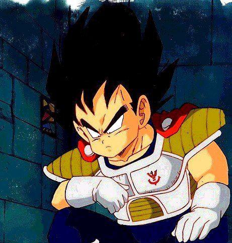
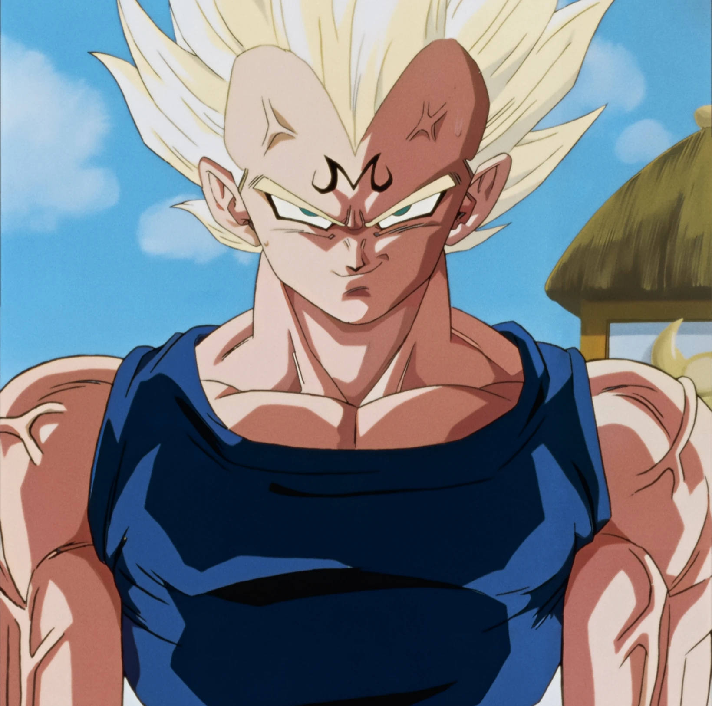
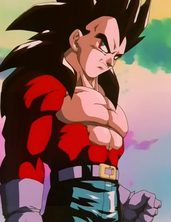
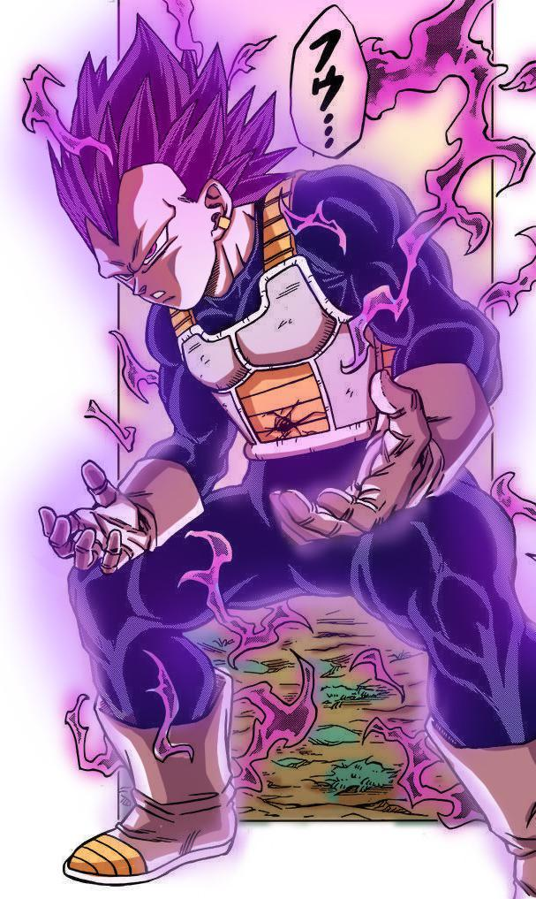
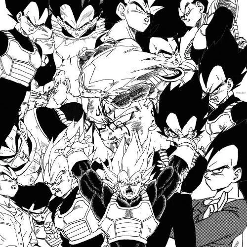

Conheça as principais obras da franquia Dragon Ball.
Dragon Ball (1986)

Durante o período de Dragon Ball Clássico, Vegeta ainda estava no espaço, atuando ao lado de Nappa sob o comando de Freeza. Como príncipe dos Saiyajins, ele já era um guerreiro extremamente poderoso e tinha grande orgulho de sua raça e de sua força.
Enquanto Goku vivia suas primeiras aventuras na Terra, Vegeta viajava pelo universo conquistando planetas e aumentando seu poder. Nesse período, ele também começou a desenvolver seu desejo de superar seus limites e se tornar cada vez mais forte, características que seriam muito importantes quando finalmente chegasse à Terra em Dragon Ball Z.
Dragon Ball Z (1989)

Vegeta aparece em Dragon Ball Z como um dos principais inimigos de Goku. Ele chega à Terra ao lado de Nappa em busca das Esferas do Dragão, mas acaba enfrentando os Guerreiros Z. Após ser derrotado por Goku, Vegeta começa a mudar sua relação com os heróis.
Ao longo de Dragon Ball Z, ele enfrenta grandes inimigos como Freeza, Cell e Majin Boo, sempre buscando aumentar seu poder e superar Goku. Com o tempo, Vegeta deixa de ser apenas um rival e passa a lutar ao lado dos Guerreiros Z, desenvolvendo também uma forte ligação com Bulma e Trunks.
Dragon Ball GT (1996)

Em Dragon Ball GT, Vegeta já está completamente integrado à vida na Terra e à sua família. Ele continua treinando e buscando superar seus limites, mas demonstra uma personalidade mais madura e uma forte preocupação com Bulma e Trunks.
Durante a série, Vegeta enfrenta diversos inimigos ao lado de Goku e dos Guerreiros Z. Um de seus maiores momentos acontece quando ele se transforma em Super Saiyajin 4, tornando-se fundamental na batalha contra Baby e outros grandes adversários.
Dragon Ball Super (2015)

Em Dragon Ball Super, Vegeta continua sua busca por poder e sua rivalidade com Goku, mas também demonstra uma grande evolução como pessoa. Ele passa a valorizar ainda mais sua família e assume um papel importante na proteção da Terra.
Durante a série, Vegeta enfrenta grandes adversários como Bills, Freeza, Goku Black e Jiren. Ele também alcança novas formas, como o Super Saiyajin Blue e o Super Saiyajin Blue Evoluído, tornando-se um dos guerreiros mais poderosos do Universo 7.
Dragon Ball Daima (2024)
Em Dragon Ball Daima, Vegeta participa de uma nova aventura ao lado de Goku e dos Guerreiros Z no Reino dos Demônios. Durante a história, ele continua demonstrando sua força e evolução como guerreiro.
Um dos momentos mais marcantes é quando Vegeta alcança o Super Saiyajin 3, uma transformação que ele nunca havia utilizado anteriormente. Essa forma mostra sua evolução e seu enorme poder, tornando sua participação na série ainda mais importante.
Mangá de Dragon Ball (1984)

Atualmente, no mangá de Dragon Ball Super, Vegeta continua sendo um dos principais guerreiros do Universo 7. Após os acontecimentos do Torneio do Poder, ele desenvolveu o Ultra Ego, uma transformação ligada ao poder de destruição de Bills.
Na Saga de Granolah, Vegeta utiliza o Ultra Ego em batalhas contra adversários extremamente poderosos, mostrando uma grande evolução. Mesmo continuando rival de Goku, Vegeta segue seu próprio caminho para alcançar novos níveis de poder e proteger sua família e seus amigos.